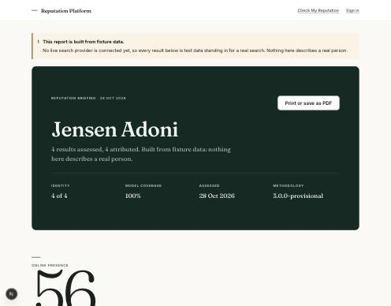
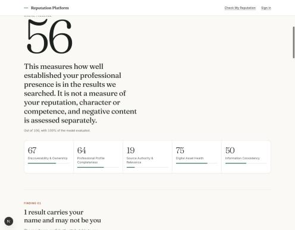
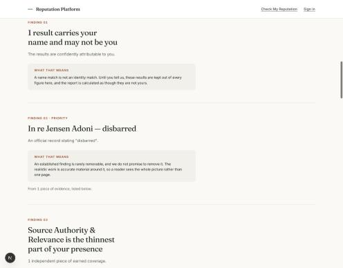
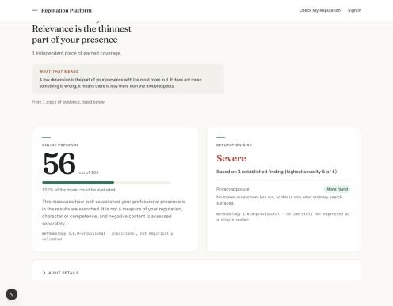
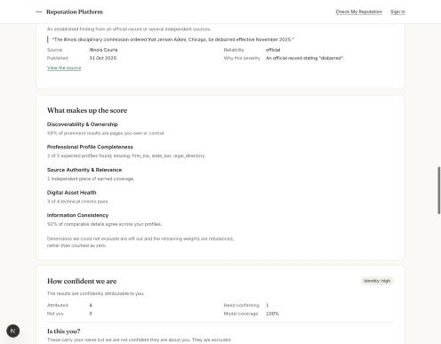
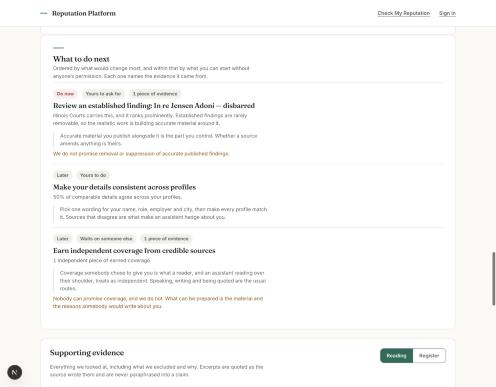
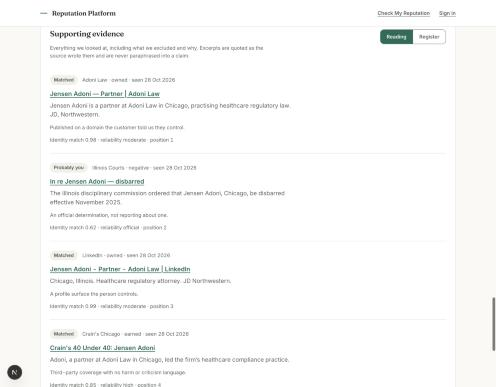
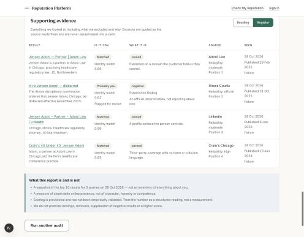

Status report, not a launch
What is built, what is not, and what the last defect cost to fix.
The reputation-check journey runs end to end. No live search provider is connected, so every result on this page comes from fixture data. The defect this page was written to report is now fixed, and fixing it made the product’s own headline number go down.
How this was checked
Every claim here was produced by running the application, not by reading it. The commands and their real output:
npm test → 316 pass, 0 fail
domain 142 · persistence 143 · website 31
npm run typecheck → clean
npm run build → compiled successfullyThe screenshots below were taken from the running application on 5 November 2026.
Feature status
Four states, kept apart on purpose: verified means it was exercised in a browser, not that the code exists.
| Feature | Status | Note |
|---|---|---|
| Home screen | Verified | Hero, three steps, closing ask |
| Name input form | Verified | Seven fields, validation, attestation |
| Audit execution | Verified | Queued job, polled; about 2s on fixtures |
| Online Presence Score | Verified | Six weighted dimensions, shown as a ribbon |
| Reputation risk | Verified | Reported separately, never averaged in |
| Identity confidence | Verified | Rebuilt. See below |
| Findings | Verified | Derived in the engine; none, three or twelve all work |
| Evidence | Verified | Reading view and register, same data |
| Recommendations | Verified | Each says who decides whether it happens |
| Print / PDF | Verified | Cover un-reverses, register always prints |
| Error states | Verified | A failure offers Try again and Edit details |
| Insufficient evidence | Verified | Reads as a finished check, not a blank |
| Sign-in and account claiming | Verified | An earlier audit follows you into the account |
| Export and deletion | Verified | 30-day grace, cancellable, then a hard purge |
| Evidence provenance | Partial | Built and tested; no engagement has used it yet |
| Search provider | Fixture only | No credentials exist. The main blocker |
| Hosting | Not deployed | Needs a Node host; cannot go on static pages |
| Email delivery | Not built | Codes appear on screen in development |
| Managed-service plan | Blocked | Needs a decision on what the service promises |
Live search is still not configured
A fixture provider returns hard-coded rows. There are no provider credentials in the repository and no code path that would use them. This has not changed and is the single thing standing between this and a real audit.
The application says so in three places rather than one: a banner above every
report, an isFixture: true flag on each stored record, and a selector
labelled Demonstration scenario. The flag lives in the data rather than
only in the interface, because a banner is lost the moment somebody screenshots a
report.
The report
Rebuilt as a briefing after three directions were rendered and compared. Running the disbarment scenario, which exercises an official finding, an unresolved identity match and a weak dimension at once.








The defect, and what fixing it cost
A subject the fixtures do not cover used to produce a report scoring 59 with the identity band reading high, while five of its six results were explicitly somebody else. It now reads low, and says why: “Most of what we found is about somebody else: 5 of these results are not you. The figures here are built from the one that is.”
The cause was one filter:
const named = records.filter((r) => r.identityConfidence > 0);Intended as results that bear the name. Behaved as results we did not reject, because a rejection scores exactly zero. The average was then taken over the matches, which is to say it could not fall. The comment four lines above it claimed the opposite, which is how it survived review.
The filter was the symptom
One number was answering two questions — how much of what we found is about this person, and how sure we are of the part that is — and reporting only the second. It is the product of both now, because both have to hold. One confident match among five contradictions is not a confident report, and five tentative matches with nothing against them is not one either.
The flagship scenario dropped from high to moderate. Three of its five attributed results are only probable, so it genuinely is not high-confidence until somebody confirms them. Tuning the thresholds to keep the old answer was available and easy, and is exactly the thing the project’s own rules forbid: adjusting a score so the product looks better.
What is still not true: none of this is calibrated. The bands at 0.85 and 0.60 are product rules, not measured ones, and 0.78 does not mean a 78% chance of anything. The number moves in the right direction now. It is not yet a probability, and will not be until there is a labelled set of correct and incorrect matches to measure against.
The engine will not credit its own work
If this product ever sells a service that publishes material for a customer, and the audit then counts that material, it is marking its own homework and selling the mark. The hole is specific: a release drafted and syndicated lands on a third-party domain, and every field on the record — source type, reliability, the earned classification — reads as coverage somebody chose to give.
Evidence now carries authorship, and source authority tests that rather than appearance. Marking one result as placed on a real scan moved the score from 65 to 61 and the report said why. Declaring our own work makes the number go down. A system where it went up is one a customer would eventually find.
The mobile app is still a different product
An Expo app exists and builds. It is not a client for this engine: it runs entirely on a local mock, its API base points at a host that does not exist, and it produces a single aggregate score — the old model this product deliberately replaced with three separate outputs.

What to do next
In order. The first is a decision rather than a task.
Choose a search provider
Everything else is finished pretending. Until a real search runs, this is an engine with excellent manners and nothing to read. Research and prices are in the repository; the decision is not a technical one.
Decide what the managed service promises
The report has nowhere to go at the end. Building that section means stating what will be done, what needs the client’s approval, what is measured and what is excluded — commitments that cannot be invented on the client’s behalf.
Put it somewhere
A Node server with a database, so not static hosting. The SEO foundation is built
and defaults to noindex until a deployment says otherwise, so launch
is a configuration change rather than a code change.
Feedback
Corrections are more useful than agreement. If something here reads as overstated, or a status is wrong, say so.